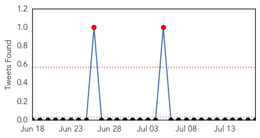
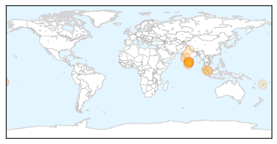
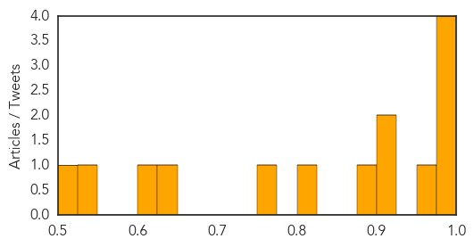
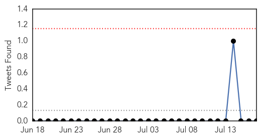
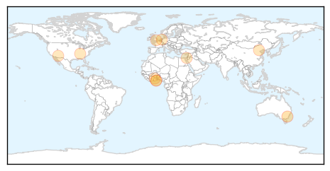
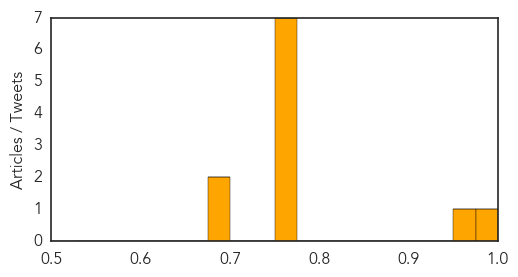

Dengue Fever
30-Day Web Trend
6 alerts, 3 warnings

30-Day Twitter Trend
2 alerts, 0 warnings

Article Locations
Article Confidences
Top Articles:
- 0.999
- Senators focus in on recent dengue fever cases
- 0.993
- Administration gears up to combat dengue
- 0.979
- Dengue cases jump 40%, hospitals shut doors in Bengaluru
- 0.977
- Visterra Announces Publication in the Journal Cell, Demonstrating That Novel Antibody, VIS513, Broadly Neutralizes All Four Serotypes of Dengue Virus in Preclinical Studies
- 0.961
- Monsoon-related ailments on rise
- 0.905
- MLAs give Khader a tongue-lashing over rising dengue cases in State
- 0.905
- MLAs give Khader a tongue-lashing over rising dengue cases in State
- 0.888
- Khader has tough time over rising dengue cases
- 0.824
- ‘Liaise with other agencies in dengue prevention’
- 0.764
- Nadda visits Safdarjung to assess dengue outbreak preparedness
- 0.635
- On surprise visit to Safdarjung Hospital Shri Nadda reviews Dengue preparedness
- 0.619
- Health Minister JP Nadda visits Safdarjung hospital to assess dengue outbreak preparedness
- 0.543
- Plans to curb dengue epidemic outdated, says expert
- 0.508
- Free foreign medical service
Top Tweets:
- 0.523
- Flavivirus news: Health Minister JP Nadda visits Safdarjung hospital to assess dengue outbreak ... http://t.co/m4K7xbkcme pathogenposse
Influenza
30-Day Web Trend
1 alerts, 0 warnings

30-Day Twitter Trend
0 alerts, 0 warnings

Article Locations
Article Confidences
Top Articles:
- 0.984
- GSK begins shipping 2015-16 US flu vaccines
- 0.951
- Emergency departments slowing after a 'tsunami' of flu presentations
- 0.772
- Sinovac Biotech Ltd (SVA) Stock Analysis
- 0.763
- Viruses compounding element in pneumonia cases
- 0.762
- The most from the coast
- 0.751
- July 17, 2015 Archives
- 0.751
- July 16, 2015 Archives
- 0.751
- July 16, 2015 Archives
- 0.751
- July 16, 2015 Archives
- 0.689
- 11 million cedis urgently needed to fight bird flu
- 0.678
- Parliament approves eleven million Ghana cedis to curb spread of Bird flu
Top Tweets:
-
No tweets found for Jul 17, 2015